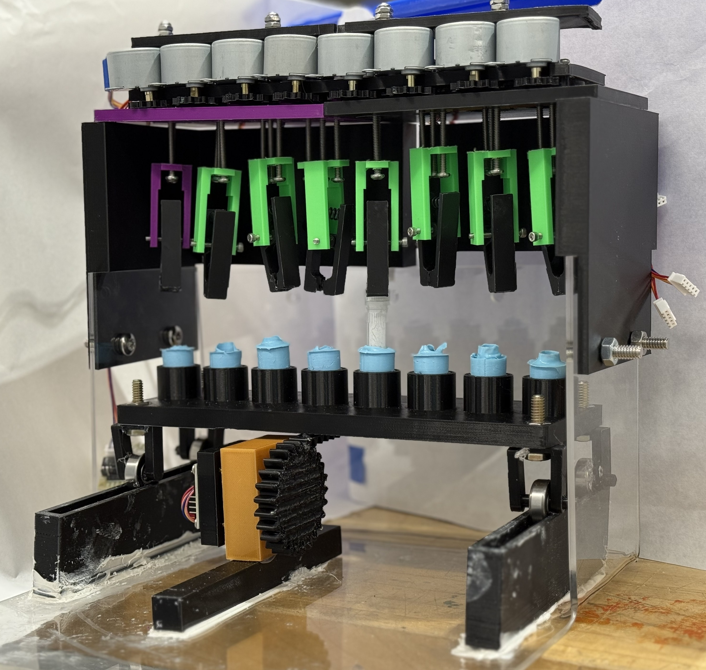

Jeremy Ginzburg
Biomedical & Mechanical Engineering Student
Duke University | AI & Machine Learning Minor
Passionate about biotechnology, medical devices, biomedical diagnostics, and AI-driven healthcare technologies.

Biomedical & Mechanical Engineering Student
Duke University | AI & Machine Learning Minor
Passionate about biotechnology, medical devices, biomedical diagnostics, and AI-driven healthcare technologies.
Conducted research in biomedical diagnostics and biophotonics, performing PCR, DNA sequencing, cell culture, and biosensing workflows. Contributed to assay optimization and data collection supporting the development of next-generation diagnostic technologies.
Investigated lipid nanoparticle drug delivery systems by synthesizing and characterizing novel formulations. Evaluated particle size, encapsulation efficiency, and formulation stability to optimize controlled drug release.
Designing and prototyping a 3D-printed prosthetic hand that converts forearm EMG signals into real-time servo-driven finger motion using Arduino, custom CAD components, and embedded control algorithms.
View Case Study →
Client-sponsored laboratory automation device designed to safely remove test tube caps through a custom mechanical gripping mechanism, rapid prototyping, and iterative engineering design.
View Case Study →Python
MATLAB
C/C++
Git
SolidWorks
Onshape
Arduino
3D Printing
PCR
DNA Sequencing
Cell Culture
Biosensing Diagnostics
Machine Learning
Signal Processing
Data Visualization
Statistics